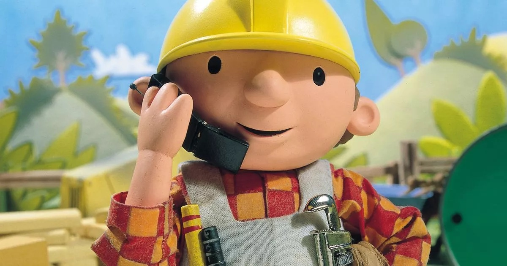

I was born on December 10, 1993. I share a birthday with some of my heroes. I went down the skateboarding path when I was 9 years old, and started drumming the next year. I spent most of my 20's working odd jobs and touring. I went to a coding bootcamp in 2020 and worked a few jobs in web development. I got laid off in 2022, went back on tour until 2023. Now I'm resetting my foundation and can build you something rad. Check my GitHub.
